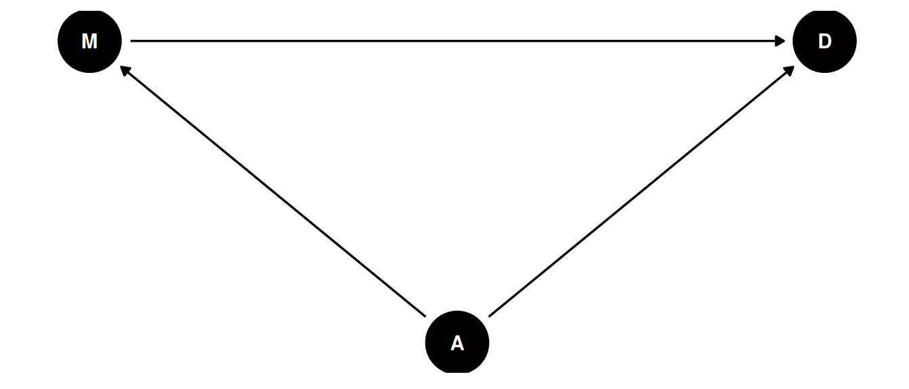
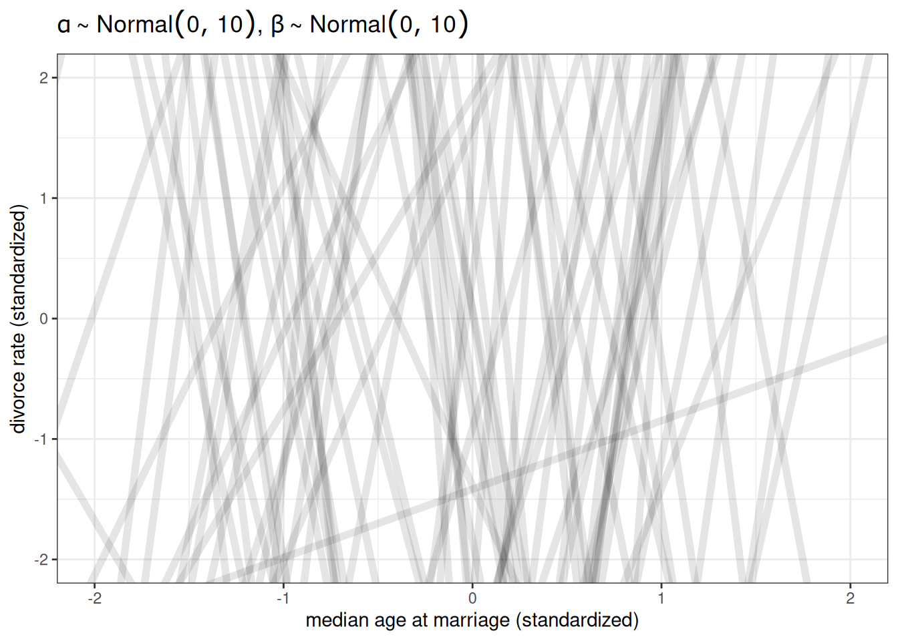
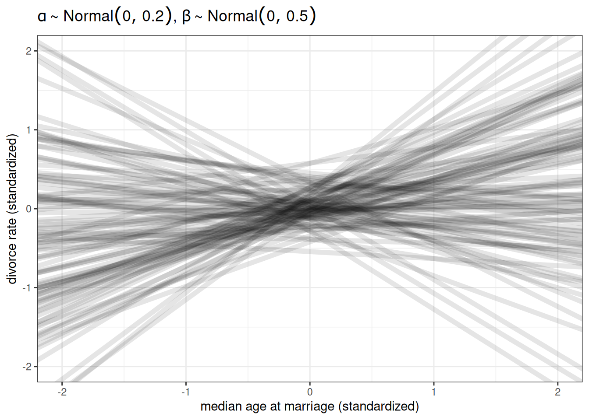

dagify(
X ~ Z,
Y ~ Z,
coords = coords
) |> ggdag(seed = 2, layout = 'auto') + theme_dag()Lecture 05 Notes
The four elemental confounds
Correlation is common in nature, causation is sparse. Causes are not in the data.
Recall:
- Estimand: goal
- Estimator: recipe, instructions
- Estimate: result, may not always match estimand due to eg. confounds
Confounds are features of the sample and how we use the sample that misleads us. Sources of confounds are diverse but there are four elemental confounds.
The fork
- X and Y are associated (\(Y \not\!\perp\!\!\!\perp X\))
- X and Y share common cause Z
- Once stratified by Z, there will be no association (\(Y \perp\!\!\!\perp X | Z\))
\(\not\!\perp\!\!\!\perp\): not independent of
\(\perp\!\!\!\perp\): independent of
\(|\): conditional of
n <- 1e3
Z <- rbern(n, 0.5)
X <- rbern(n, (1-Z) * 0.1 + Z * 0.9)
Y <- rbern(n, (1-Z) * 0.1 + Z * 0.9)
table(X, Y) Y
X 0 1
0 403 96
1 97 404cor(X, Y)[1] 0.6140012Example: marriage and divorce
Estimand
Why do regions of the USA with higher rates of marriage also have higher rates of divorce?
Scientific model
Age at marriage is also associated with divorce and marriage rates. Is the relationship between marriage rate and divorce rate solely a result of the fork, their shared relationship with age at marriage?
dagify(
M ~ A,
D ~ A + M,
coords = coords
) |> ggdag(seed = 2, layout = 'auto') + theme_dag()
To estimate the causal effect of marriage rate, we need to stratify by age at marriage. Within each level of age at marriage, the part of the association between marriage rate and divorce rate that is caused by age at marriage is removed.
Stratifying by a continuous variable: every value of A produces a different relationship between D and M. We have a different expected relationship.
Statistical model
If we standardize (or rescale) the data, priors are easier to set for linear models. Standardize = subtract the mean (mean of 0) and divide by the standard deviation (sd of 1). “Since the outcome and the predictor are both standardized, the intercept should be very close to zero. The slope beta indicates that a change in one standard deviation in the predictor corresponds to a change in one standard deviation in the outcome” (Page 126).
Prior predictive simulation
\(D_{i} \sim Normal(\mu_{i}, \sigma)\)
\(\mu_{i} = \alpha + \beta_{M} M_{i} + \beta_{A} A_{i}\)
\(\alpha \sim Normal(0, 0.2)\)
\(\beta_{M} \sim Normal(0, 0.5)\)
\(\beta_{A} \sim Normal(0, 0.5)\)
\(\sigma \sim Exponential(1)\)
n <- 100
ggplot() +
geom_abline(aes(intercept = rnorm(n, 0, 10),
slope = rnorm(n, 0, 10)),
alpha = 0.1, linewidth = 2) +
labs(x = 'median age at marriage (standardized)',
y = 'divorce rate (standardized)',
title = TeX(r"($\alpha \sim Normal(0, 10)$, $\beta \sim Normal(0, 10)$)")) +
xlim(-2, 2) +
ylim(-2, 2)
ggplot() +
geom_abline(aes(intercept = rnorm(n, 0, 0.2),
slope = rnorm(n, 0, 0.5)),
alpha = 0.1, linewidth = 2) +
labs(x = 'median age at marriage (standardized)',
y = 'divorce rate (standardized)',
title = TeX(r"($\alpha \sim Normal(0, 0.2)$, $\beta \sim Normal(0, 0.5)$)")) +
xlim(-2, 2) +
ylim(-2, 2)
Analyze the data
The causal effect is not a function of one parameter, so reporting simply the mean estimated parameter is often insufficient - especially when considering non-linear models or more complicated models.
Instead, simulate interventions.
\(p(D|do(M))\)
The distribution of D when we intervene (do) on M. This is different than
When we do(M), we remove all arrows into M. Using a common set of values for A, we set different values for M and see what difference it makes.
- Generate common set of values for A
- Set first value for M
- Simulate for first value of M and common set of values for A
- Set second value for M
- Simulate for second value of M and common set of values for A
- Compute the contrast
g1 <- dagify(
M ~ A,
D ~ A + M,
coords = coords
) |> ggdag(seed = 2) + theme_dag() + labs(title = 'no intervention')
g2 <- dagify(
D ~ A + M,
coords = coords
) |> ggdag(seed = 2) + theme_dag() + labs(title = 'do(M)')
g1 + g2What about the causal effect of A, \(p(D|do(A))\)?
The total causal effect of A on D requires a new model, since M is a pipe between A and D. To estimate the causal effect of A, we need a new model that does not include the variable M.
The pipe
dagify(
Z ~ X,
Y ~ Z,
coords = coords
) |> ggdag(seed = 2, layout = 'auto') + theme_dag()Z is a “mediator”
- X and Y are associated (\(Y \not\!\perp\!\!\!\perp X\))
- Influence of X on Y transmitted through Z
- Once stratified by Z, there will be no association (\(Y \perp\!\!\!\perp X | Z\))
n <- 1e3
X <- rbern(n, 0.5)
Z <- rbern(n, (1-X) * 0.1 + X * 0.9)
Y <- rbern(n, (1-Z) * 0.1 + Z * 0.9)
table(X, Y) Y
X 0 1
0 399 104
1 89 408cor(X, Y)[1] 0.614332table(X[Z == 0], Y[Z == 0])
0 1
0 396 50
1 46 7cor(X[Z == 0], Y[Z == 0])[1] 0.01934141table(X[Z == 1], Y[Z == 1])
0 1
0 3 54
1 43 401cor(X[Z == 1], Y[Z == 1])[1] -0.04862018Example: plant growth, anti-fungal
Estimand
What is the causal effect of treatment (anti-fungal) on plant growth?
Scientific model
- H0: height at time 0
- H1: height at time 1
- F: fungus
- T: anti-fungal treatment
dagify(
H1 ~ H0 + F + T,
F ~ T,
coords = coords
) |> ggdag(seed = 2, layout = 'auto') + theme_dag()Analyse the data
(Full example on pages 170-175)
The path T -> F -> H1 is a pipe. Should we stratify by F? No. The total causal effect of treatment is blocked by the pipe through F.
This is also called post-treatment bias. Stratifying by a consequence of the treatment, misleading that treatment does or doesn’t work.
Post-treatment bias
Stratifying by a consequence of the treatment induces post-treatment bias
Can mislead that the treatment doesn’t work
The collider
dagify(
Z ~ X + Y,
coords = coords
) |> ggdag(seed = 2, layout = 'auto') + theme_dag()Z is a “collider”
- X and Y are not associated (\(Y \perp\!\!\!\perp X\))
- Z is caused by both X and Z
- Once stratified by Z, X and Y are associated (\(Y \not\!\perp\!\!\!\perp X | Z\))
n <- 1e3
X <- rbern(n, 0.5)
Y <- rbern(n, 0.5)
Z <- rbern(n, ifelse(X + Y > 0, 0.9, 0.2))
table(X, Y) Y
X 0 1
0 249 254
1 250 247cor(X, Y)[1] -0.00798816table(X[Z == 0], Y[Z == 0])
0 1
0 200 27
1 28 22cor(X[Z == 0], Y[Z == 0])[1] 0.3236048table(X[Z == 1], Y[Z == 1])
0 1
0 49 227
1 222 225cor(X[Z == 1], Y[Z == 1])[1] -0.3202523Example: grant applications
dagify(
A ~ N + T,
coords = coords
) |> ggdag(seed = 2, layout = 'auto') + theme_dag()Each grant application scored on newsworthiness and trustworthiness.
Grants are only awarded if sufficiently newsworthy or trustworthy. Few grants are high in both, therefore there is a negative association between newsworthiness and trustworthiness that arises from conditioning on awards. This is a post-selection sample, where the sample (eg. awards or jobs) have already selected for features.
Example: age and happiness
There are post-treatment colliders like the example above and there are colliders that are a result from the statistical processing, within the analysis.
Estimand
Does age influence happiness?
Scientific model
Possible confound is marital status
dagify(
M ~ A + H,
coords = coords
) |> ggdag(seed = 2, layout = 'auto') + theme_dag()Statistical model
(In the textbook on pages 176-177)
Analyse the data
No association between age and happiness but when stratified by marital status, there is a negative association between age and happiness.
The descendant
dagify(
Z ~ X + Y,
A ~ Z,
coords = coords
) |> ggdag(seed = 2, layout = 'auto') + theme_dag()A is a descendant
Including A is like including Z
- X and Y are causally associated through Z (\(Y \not\!\perp\!\!\!\perp X\))
- A holds information about Z
- Once stratified by A, X and Y are less associated (\(Y \perp\!\!\!\perp X | Z\))
n <- 1e3
X <- rbern(n, 0.5)
Z <- rbern(n, (1-X) * 0.1 + X * 0.9)
Y <- rbern(n, (1-Z) * 0.1 + Z * 0.9)
A <- rbern(n, (1-Z) * 0.1 + Z * 0.9)
table(X, Y) Y
X 0 1
0 399 104
1 89 408cor(X, Y)[1] 0.614332table(X[A == 0], Y[A == 0])
0 1
0 359 55
1 42 49cor(X[A == 0], Y[A == 0])[1] 0.3855157table(X[A == 1], Y[A == 1])
0 1
0 40 49
1 47 359cor(X[A == 1], Y[A == 1])[1] 0.33666In this case, the correlation is reduced by about half.
Descendants are everywhere, because many measurements we have are proxies for other things we would be ideally measuring directly. Eg. factor analysis, measurement error, social networks.